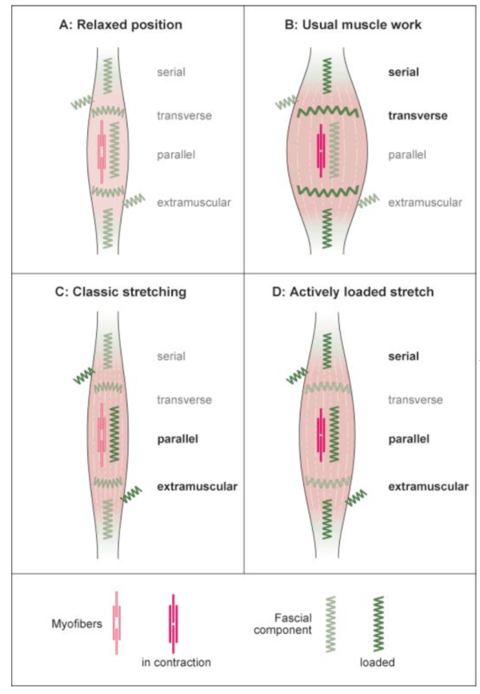
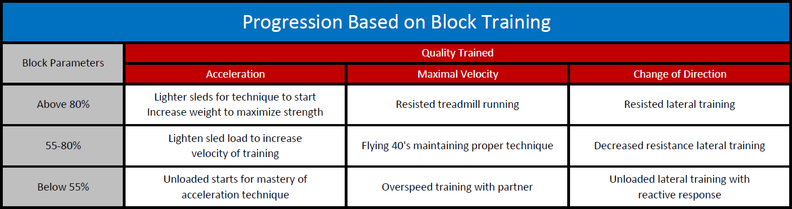
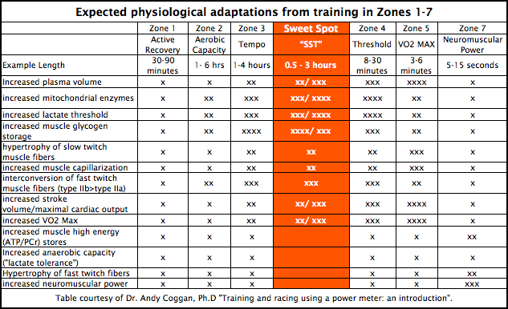

Module 38: Athletic Performance Architecture — Zac Goodman BMT, Dynamic Elasticity, Triphasic RFD & Sprinting
1. Biomechanical Movement Training (BMT) & Tendon Elasticity Philosophy
Traditional bodybuilding and heavy linear resistance training emphasize slow concentric tempo, sustained muscle tension, and isolated joint contractions. While effective for sarcoplasmic hypertrophy, these modalities frequently compromise tendon compliance, stiffen the extracellular matrix without functional elasticity, and introduce excessive joint shear.
Inspired by Zac Goodman's Biomechanical Movement Training (BMT) and elite athletic development systems (Dietz's Triphasic Training, Verkhoshansky's Shock Method), Module 38 engineers an explosive, tendon-dominant, and joint-protective athletic system.
The Core Biological Tenets:
- Stretch-Shortening Cycle (SSC) Decoupling & Rate of Force Development (RFD): Using paused box squats to eliminate the passive elastic rebound of muscle spindles, forcing the central nervous system (CNS) to recruit high-threshold Type IIx motor units instantaneously from a dead stop.
- Fascial & Tendon Energy Storage: Transforming the Achilles and patellar tendons into hyper-efficient biological springs through progressive plyometrics and dumbbell-loaded jumps.
- Rotational & Scapulothoracic Freedom ("Thrower's Bench"): Restoring multi-planar shoulder rhythm, rotator cuff dynamic stability, and high-velocity pressing without pinning the scapulae against a rigid bench.
- Pure Neural Sprint Mechanics: Sprints placed at the beginning of the session on a 100% fresh central nervous system to maximize peak neural firing rates, stimulate androgen receptors, and provide eccentric hamstring protection.
- Autoregulated A/B/A Microcycle: Decoupled from rigid 7-day calendars, alternating A/B/A as neuro-muscular readiness and systemic HRV dictate, interspersing Zone 2 aerobic conditioning and athletic skill work on recovery days.
2. Day A: Explosive Lower & Dynamic Full-Body Elasticity
┌─────────────────────────────────────────────────────────────────────────────┐
│ ⚡ DAY A SESSION BLUEPRINT │
├─────────────────────────────────────────────────────────────────────────────┤
│ 1. Tendon & Ankle Preparation (BMT Warmup Plyometrics) │
│ 2. Primary Explosive Compound: Paused Box Squats │
│ 3. Secondary Elastic Power: Dumbbell Weighted Jumps │
│ 4. Secondary Hinge & Posterior Chain: Romanian Deadlift (RDL) / Jefferson │
│ 5. Anterior Core & Trunk Integration: Hanging Leg Raises / Ab Wheel │
└─────────────────────────────────────────────────────────────────────────────┘
Exercise Execution & Kinetic Parameters:
- Exercise 1: BMT Warmup Plyometrics & Joint Decompression (8–10 mins)
- Pogo Hops (Ankle Stiffness):* 3 sets
\times20 reps. Stiff ankles, minimal knee flexion, rapid ground contact (< 150\text{ ms}). - Drop Landings:* 2 sets
\times5 reps stepping off an 12–18" box, sticking the landing into a quarter squat with quiet feet (eccentric absorption). - ATG / Patrick Steps & Tibialis Raises:* 2 sets
\times15 reps to flood the patellar and Achilles tendons with synovial fluid. - Exercise 2: Paused Box Squats (Primary Explosive Lift)
- Protocol:* 5 sets
\times3 reps @ 65–75% 1RM (Speed / Dynamic Effort). - Execution:* Descend under control to a parallel box. Sit completely back onto the box, releasing hip flexor tension while keeping core brace locked for 1.5 to 2.0 seconds (breaking the kinetic chain). Explode upward off the box with maximum voluntary acceleration.
- Physiological Target:* Maximum Rate of Force Development (
\text{RFD} = \Delta \text{Force}/\Delta \text{Time}). - Exercise 3: Dumbbell Weighted Jumps (Secondary Elastic Power)
- Protocol:* 4 sets
\times4–5 reps. - Load:* Light dumbbells (10% to 15% of bodyweight in each hand).
- Execution:* Quick dip into a quarter-squat and immediate violent vertical jump. Land softly, reset completely between each repetition (do not bounce).
- Exercise 4: Secondary Hinge Motion (Posterior Chain Resilience)
- Protocol:* 3 sets
\times6–8 reps of Dumbbell or Barbell Romanian Deadlifts (RDL) OR Jefferson Curls / Reverse Hyperextension. - Execution:* Slow 3-second eccentric phase feeling deep hamstring and glute stretch; squeeze glutes at lockout. Bulletproofs the posterior fascial line and protects the lumbar spine.
- Exercise 5: Hanging Leg Raises or Ab Wheel Rollouts
- Protocol:* 3 sets
\times10–12 reps. Emphasize full pelvic posterior tilt and eccentric control.
3. Day B: Upper Elastic Power, "Thrower's Bench" & Sprinting
┌─────────────────────────────────────────────────────────────────────────────┐
│ 🚀 DAY B SESSION BLUEPRINT │
├─────────────────────────────────────────────────────────────────────────────┤
│ 1. Neural Sprint Priming & CNS Acceleration (10m–30m Flys) │
│ 2. Scapular & Rotator Dynamic Prep │
│ 3. Primary Pressing Lift: "Thrower's Bench" (Dynamic Scapular Press) │
│ 4. Horizontal Upper Pull: Chest-Supported Dumbbell / Seal Row │
│ 5. Rotational & Shoulder Stability: Face Pulls + Cable Rotational Chops │
└─────────────────────────────────────────────────────────────────────────────┘
Exercise Execution & Kinetic Parameters:
- Exercise 1: Maximum Velocity & Acceleration Sprinting (Fresh CNS)
- Timing:* Executed first, immediately after dynamic warmup, while the central nervous system is completely unfatigued.
- Protocol:* 4 to 6 sprints
\times15 to 30 meters (e.g., 2\times10m acceleration, 2\times20m, 2\times30m flys). - Rest:* Full recovery between sprints (2 to 3 minutes walk-back). If sprint velocity drops by
>5\%, terminate the sprint session immediately. - Physiological Target:* High-velocity neural firing rates, recruitment of latent fast-twitch motor pools, and maximal eccentric hamstring strengthening during terminal swing phase.
- Exercise 2: "Thrower's Bench" (Primary Upper Lift)
- The Biomechanical Concept:* Standard powerlifting bench pressing locks the scapulae down and back onto a wide bench, immobilizing the scapulothoracic joint and transferring unnatural shear stress onto the anterior glenohumeral capsule. In contrast, throwing athletes require the scapula to protract, upwardly rotate, and dynamically stabilize the humeral head.
- Execution:* Performed on a narrow bench (or with a longitudinal foam roller along the spine) using neutral-grip dumbbells or a multi-grip Swiss bar. As the weight is lowered, allow deep thoracic extension and scapular retraction; as you press upward, aggressively drive through and allow the scapulae to protract and wrap around the rib cage at lockout.
- Protocol:* 4–5 sets
\times5–6 reps @ moderate-heavy load, focusing on high concentric speed and pristine shoulder centration. - Exercise 3: Chest-Supported Row / Seal Row (Posterior Upper Balance)
- Protocol:* 4 sets
\times8–10 reps. Pull elbows to hip line, pausing for 1 second at full scapular retraction to reinforce lower trapezius and rhomboids. - Exercise 4: Shoulder Bulletproofing & Rotational Power
- High Cable Face Pulls with External Rotation:* 3 sets
\times15 reps (infraspinatus and teres minor strengthening). - Standing Cable / Band Rotational Chops:* 3 sets
\times10 reps per side (transfers rotational power from the back hip through the anterior fascial sling).
4. The Autoregulated A/B/A Microcycle & Off-Day Architecture
Instead of locking into an artificial 7-day work week that forces training through inadequate recovery, workouts are sequenced in an A/B/A undulating cadence:
Week 1: Day A (Explosive Lower) ──► Off/Skill ──► Day B (Sprint/Thrower) ──► Off/Cardio ──► Day A (Lower) ──► Weekend
Week 2: Day B (Sprint/Thrower) ──► Off/Skill ──► Day A (Explosive Lower) ──► Off/Cardio ──► Day B (Sprint) ──► Weekend
Off-Day Protocols (Cardio, Mobility & Athletic Skill Work):
- Zone 2 Cardiovascular Base (150–200 min/week total):
- Performed on non-lifting days (30–45 mins on stationary bike, Concept2 rower, or incline walking).
- Maintained at conversational pace (Heart Rate: $180 - \text{age} \pm 5\text{ bpm}
; blood lactate< 2.0\text{ mmol/L}). - Stimulates PGC-1\alpha$ mitochondrial biogenesis in Type I slow-twitch fibers without causing muscle damage or CNS fatigue.
- Athletic Skill & Play Work:
- Basketball shooting/drills, tennis/pickleball, agility ladder work, or bodyweight gymnastics.
- Preserves multi-planar movement literacy, spatial balance, and vestibular coordination.
5. Nutritional & Hormetic Synergies with Module 38
- Pre-Workout Tendon Priming (30–60 mins prior):
- Consume the Restorative Longevity Broth Drink ([Module 37](file:///d:/Ryan%20Files%202026/06_Health_and_Wellness/Whitepaper_v4_Rewrite/interventions/37_Longevity_Nutrition_Recipes_and_Powders.md)) containing 15 g Hydrolyzed Collagen Peptides + 500–1,000 mg Liposomal Vitamin C.
- Circulating hydroxyproline and ascorbic acid peak in the bloodstream just as mechanical compressive and tensile loads force fluid into avascular tendon matrices.
- Pre-Workout eNOS Loading (90 mins prior):
- 400 mg Inorganic Dietary Nitrate ([Module 34](file:///d:/Ryan%20Files%202026/06_Health_and_Wellness/Whitepaper_v4_Rewrite/interventions/34_Oral_Microbiome_Periodontal_Nitrate_Engine.md)) + Microdose Tadalafil ([Module 10](file:///d:/Ryan%20Files%202026/06_Health_and_Wellness/Whitepaper_v4_Rewrite/interventions/10_Microdose_Tadalafil_cGMP_eNOS.md)) for maximal muscular perfusion and reduced oxygen cost of submaximal exercise.
- Immediate Post-Workout Hormetic Cascade:
- Transition straight from the workout into the Finnish Thermal Sauna ([Module 28](file:///d:/Ryan%20Files%202026/06_Health_and_Wellness/Whitepaper_v4_Rewrite/interventions/28_Finnish_Thermal_Sauna_HSP70.md): 85–95°C for 20–25 minutes, primed 60 mins prior with Selbex) to elicit a massive growth hormone release and HSF1/HSP70 chaperone synthesis.
- The 4-Hour Post-Workout Antioxidant Exclusion Rule:
- Do not consume supplemental Vitamin C, PQQ, Astaxanthin, or high-dose polyphenols within 4 hours post-workout. Endogenous ROS generated during sprinting and heavy jumping serves as the mandatory signaling trigger for mitochondrial biogenesis and myofibrillar adaptation.
Spidered Biological & Protocol Visualizations






